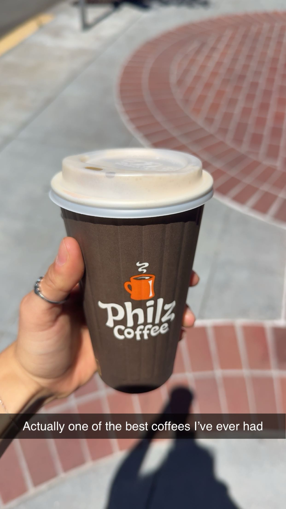

PHILZ
Location:
101 Forest Ave
Palo Alto, CA

Yes, this is really the only picture I have.
Okay okay, I know Philz is a chain but I just had to include it here. I will never forget the first time I tried Philz because, seriously, my life was changed. This summer I was an intern at Stanford’s Linear Accelerator Center, and I was offered free housing on Stanford’s campus. After a long day of work, after a good day of work, after a bad day of work, when I had no work, I was here.
Now usually I do not like going to the same places too many times. I love trying new coffee shops, but it was just too good and I knew when the summer ended I would be stripped of Philz. Why, why can there be no Philz in Seattle? Kills me every day.
Ambiance
Honestly not too much to say here (I know Philz is a chain, but I am just going off this one location since it’s the one I always went to). Nothing really stood out to me, but also nothing bad to say about it. There was a decent amount of seating, lots of outlets, a water station, some outdoor seating, and bathrooms. I would often stay to read or get some work done while I drank my coffee. No complaints.
Price
Again, not too much to say here. Pretty standard prices for the Bay Area. I of course had my app to get points since I was there so much, and I was sooo close to my free coffee. It’s okay, I will be back eventually to claim it.
Coffee
Where to start? My go-to was the Honey Haze. It was so good, I’m salivating just thinking about it. Maybe I’m hyping it up too much because it’s the sort of thing where you want what you can’t have, but I really did love it. I usually would order with medium almond milk and medium honey. It was the perfect level of creaminess and sweetness. Right before I left for the summer, their fall drinks came out. Let me just say their apple cinnamon roll drink was incredible.